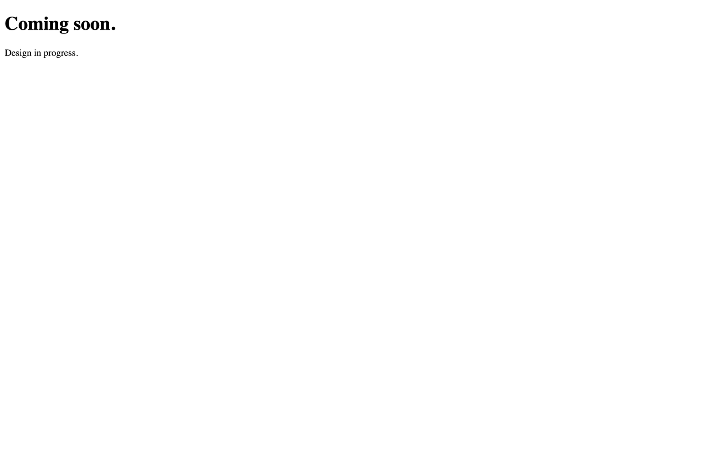
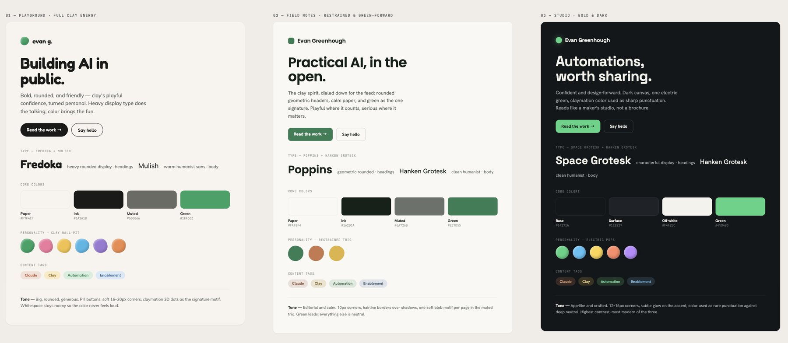
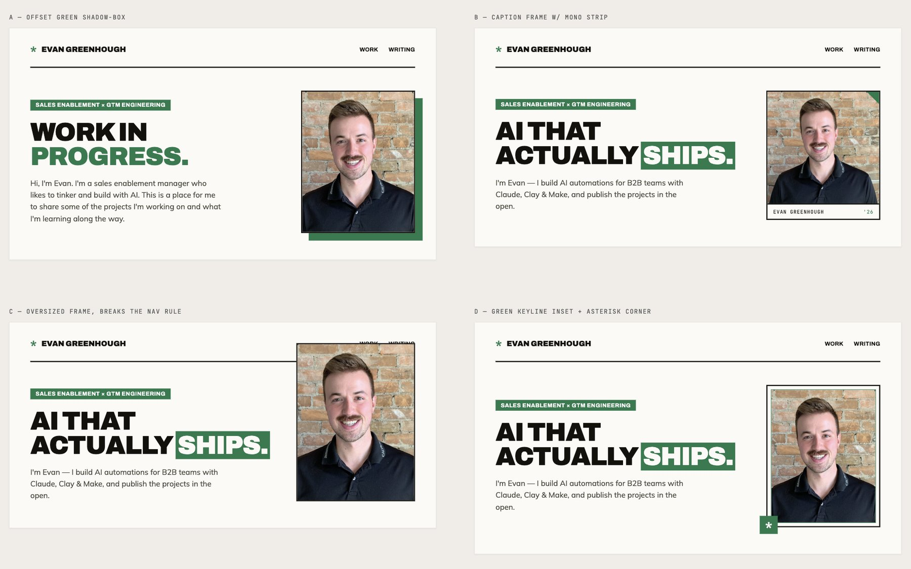

This website
I mocked up this website with Claude Design, built it with Claude Code, and shipped it on GitHub Pages.

01Why I built it
I wanted a spot to think out loud and showcase what I'm building. I've never really been into posting content on LinkedIn, so creating my own website felt like a good compromise.
The other reason I took on this project was to get hands-on experience with GitHub. Repo and commit meant nothing to me. I wanted to learn some of the basics and git good. Hah.
02What I built
The website you're looking at right now. Pretty neat, eh? At the time of this post, it includes a home page, a spot for projects and case studies, as well as a blog for my writing. There's also a proper 404 page, although I hope you don't find it lol.
I used Claude Design to create the initial visual identity for the website. I'm obsessed with how Clay rebranded their home page and started with their website as inspiration. I really liked the personality of the initial direction, but it didn't feel like me. I workshopped a few different ideas and ended up with the brand I have today.

A few things I like are:
- The green color (it's in my last name)
- The brutalist font and overall feel
- That slick-looking typewriter animation
- The asterisk logo (a small nod to my favourite author, Kurt Vonnegut)

Once I locked in the design, I went to Claude Code to figure out how to get the design out of Claude Design and into a format GitHub could serve.
03How it works
I used GitHub Pages to host the code. It serves whatever is on the main branch, so pushing a commit deploys the content live on my site. The upside of using GitHub for my website:
- Version history. Git keeps every version of every file. The screenshot of the day-one placeholder page in this post exists because I pulled it back out of the repo's history.
- Branching. I can experiment with design changes on a separate branch without touching the live site.
- Free hosting. GitHub Pages costs nothing. The domain is the only bill.
- I own the files. The whole site is plain HTML and CSS in a folder. No platform lock-in, nothing to migrate off of later.
The tradeoff is that, unlike a proper CMS like WordPress or Squarespace, there's a lot of manual updating that needs to be done when I add new content. The content needs to be uploaded, the home page updated, the descriptions written, and a handful of other dependencies fixed.
To combat this, I made a few different skills in Claude Code that automate the entire process. With a single slash command, Claude Code pulls the latest version of the site, builds the new page, adds it to the right hub and the home page, writes the titles and metadata in the standard format, pushes the commit, and confirms the live page works. The repo also carries a playbook documenting every step, so nothing gets overlooked. This write-up was published through that exact flow.
04What broke & what I learned
Bugs, bears, Battlestar Galactica. Speaking of bugs, the first one I encountered was with the navigation bar. I wanted it to float down with you as you scrolled down the page. However, if you scrolled down slightly and stopped in the right place, the bar rapidly jackhammered up and down. The bar shrinks when you scroll, shrinking changes the page height, and that change pushed the scroll position back across the threshold that triggered the shrink. An infinite loop. Claude helped me debug the problem by creating two thresholds: one to shrink after scrolling far enough down, and another to expand only after coming most of the way back up.
One of the other challenges I ran into came from running multiple Claude Code sessions at once. Each session works from its own local copy of the repo, and that copy only updates when you pull the latest version from GitHub. This resulted in some sessions working with an outdated copy, which caused an issue at one point and taught me why it's important to pull the latest version before editing anything.
I've had the idea of building my own website flicker up from time to time over the years. Yet I'd never actually built a version that I was happy with. Claude Design and Claude Code helped me change that. I was able to go from idea to a live domain in less than a day. I've also learned a bunch about GitHub and have an automated publishing process I can rely on.